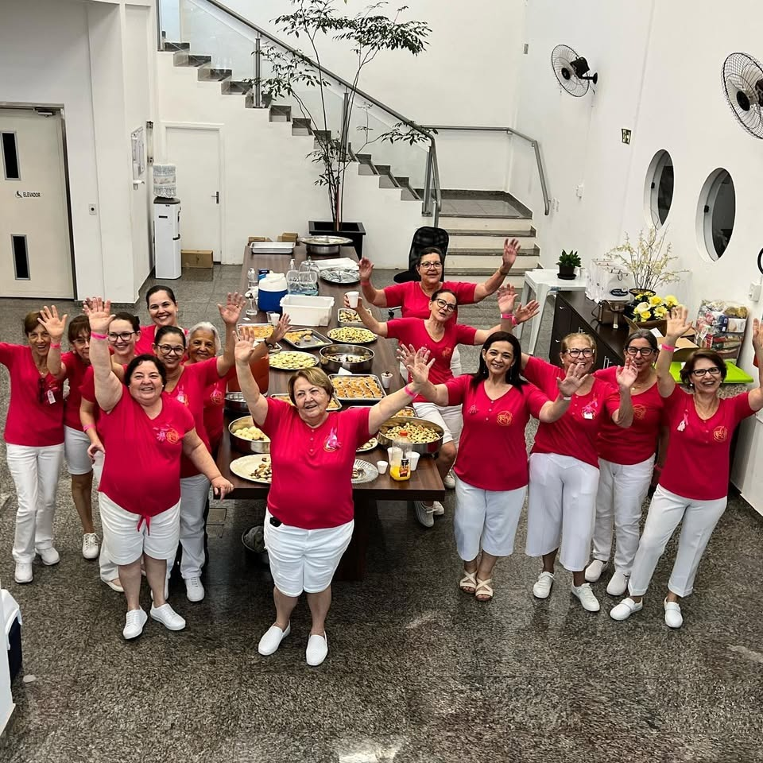

Acolhimento · Prevenção · Solidariedade
Seu gesto se transforma em cuidado
Informação, presença e esperança para pessoas e famílias em Santa Cruz do Rio Pardo e região. Juntos somos mais fortes.
Estamos aqui para acolher, informar e ajudar.
“Juntos somos mais fortes!”A Rede de Combate ao Câncer SCRP reúne conscientização, acolhimento humanizado e apoio concreto a pacientes e familiares que enfrentam o câncer — fornecendo alimentos, medicamentos, fraldas, suporte e a união de toda a comunidade santacruzense.
Nossa história
Quem Somos
Uma rede de acolhimento construída com presença, escuta ativa e solidariedade que transforma vidas.
Somos uma rede de acolhimento, solidariedade e cuidado que atua junto a pessoas e famílias em situação de vulnerabilidade durante o enfrentamento do câncer.
A Rede do Câncer foi fundada aproximadamente em 1989. Desde então, nosso trabalho reúne apoio diário às famílias, prevenção contínua, conscientização e ações voluntárias que aproximam a comunidade de quem mais precisa.
Nosso objetivo permanente é aumentar a visibilidade das causas de saúde, captar doações e engajar voluntários para garantir a dignidade e a assistência a cada paciente acolhido.
-
01
História & Tradição
Uma trajetória sólida iniciada em 1989, construída com o amor e a dedicação incansável de voluntárias e da comunidade.
-
02
Cuidado Integral
Apoio contínuo com entrega de cestas alimentícias, fraldas, medicamentos essenciais e visitas quinzenais de acolhimento.
-
03
Comunidade Ativa
Mobilização através de campanhas de conscientização, eventos beneficentes, voluntariado e parcerias solidárias.
O que fazemos
Nossas Ações
Trabalhamos todos os dias para levar apoio, cuidado e esperança a quem enfrenta o câncer e à sua família.
Informação que acolhe
Conscientização e Prevenção
Conhecer o próprio corpo, manter hábitos saudáveis e buscar orientação médica são os maiores atos de amor próprio.
Conscientização
Falar sobre o câncer abertamente, com empatia e respeito, quebra tabus, reduz o medo e conecta pessoas a redes de diagnóstico precoce e apoio.
Prevenção Ativa
Práticas saudáveis como alimentação equilibrada, atividade física regular e evitar o uso de tabaco e álcool reduzem expressivamente os fatores de risco.
Atenção aos Sinais
Nódulos, alterações na pele, dores persistentes ou cansaço inexplicável merecem investigação imediata por um médico especialista.
Acompanhamento Médico
Mamografia, exames ginecológicos, dermatológicos e laboratoriais periódicos salvam vidas quando realizados conforme a recomendação médica.
Informação Confiável
Desinformação gera angústia desnecessária. Sempre consulte profissionais de saúde, unidades de atenção básica e instituições sérias.
Cuidado com a Família
O apoio psicológico e emocional aos familiares é fundamental durante o tratamento. O acolhimento humano faz toda a diferença na recuperação.
Nota de responsabilidade: As informações desta seção possuem caráter exclusivamente educativo e preventivo. Não realizamos diagnósticos nem receitamos tratamentos individuais. Em caso de dúvidas sobre sintomas, procure imediatamente um médico ou a unidade de saúde mais próxima.
Presença e missão
Nossa Rede em Imagens
Registros reais das voluntárias, campanhas institucionais e o acolhimento que move a Rede SCRP.
Agenda solidária
Eventos e Atividades
Momentos de união, conscientização e arrecadação beneficente em prol dos pacientes atendidos.
Trajetória e Compromisso
+35
anos de acolhimento
Desde 1989 transformando o cuidado em dignidade. Uma história escrita por muitas mãos, com amor, escuta e a certeza de que a solidariedade cura.
Como contribuir
Seu gesto se transforma em cuidado
Escolha um valor ou contribua livremente. Toda ajuda garante alimentos, fraldas, medicamentos e apoio direto a quem enfrenta o câncer.
Você escolheu contribuir com R$ 20.
Ajude na compra de itens essenciais e alimentos para as famílias assistidas.
Transparência e Credibilidade
Cada centavo arrecadado é destinado com seriedade e transparência para a manutenção dos acolhimentos, cestas e remédios.
Impacto Social Comprovado
Mais de 35 anos de atuação ininterrupta em Santa Cruz do Rio Pardo, amparando centenas de famílias em seus momentos mais desafiadores.
Toda ajuda pode se transformar em cuidado.
Um simples gesto de solidariedade sustenta visitas de amor, nutrição, remédios e esperança para quem mais precisa.
Quero ajudarEstamos por perto
Contato & Localização
Estamos em Santa Cruz do Rio Pardo - SP. Envie uma mensagem, cadastre-se como voluntário ou fale conosco.
Canais de Atendimento
-
E-mail Institucional: [INSERIR E-MAIL] / contato@rededocancer.org.br
-
Telefone Fixo: [INSERIR TELEFONE] / (14) 3372-6306
-
WhatsApp Oficial: [INSERIR WHATSAPP] / (14) 99812-1613
-
Instagram: [INSERIR INSTAGRAM] / @rededocancer_scrp
-
Localização: Santa Cruz do Rio Pardo - SP